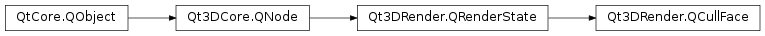

Qt3DRender.QCullFace¶
Detailed Description¶
The
QCullFaceclass specifies whether front or back face culling is enabled.
QCullFacesets whether the front or back facets are culled. Facets include triangles, quadrilaterals, polygons and rectangles.It can be added by calling the addRenderState() method on a
QRenderPass:// using namespace Qt3DRender; QRenderPass *renderPass = new QRenderPass(); // Create a front face culling render state QCullFace *cullFront = new QCullFace(); cullFront->setMode(QCullFace::Front); // Add the render state to the render pass renderPass->addRenderState(cullFront);Or by calling the addRenderState() method on a
QRenderStateSet:// using namespace Qt3DRender; QRenderStateSet *renderStateSet = new QRenderStateSet(); // Create a front face culling render state QCullFace *cullFront = new QCullFace(); cullFront->setMode(QCullFace::Front); // Add the render state to the render pass renderStateSet->addRenderState(cullFront);See also
-
class
PySide2.Qt3DRender.Qt3DRender.QCullFace([parent=nullptr])¶ Parameters: parent – PySide2.Qt3DCore.Qt3DCore::QNodeConstructs a new
QCullFace.QCullFaceinstance withparentas parent.
-
PySide2.Qt3DRender.Qt3DRender.QCullFace.CullingMode¶ This enumeration specifies values for the culling mode.
Constant Description Qt3DRender.QCullFace.NoCulling Culling is disabled Qt3DRender.QCullFace.Front Culling is enabled for front facing polygons Qt3DRender.QCullFace.Back Culling is enabled for back facing polygons Qt3DRender.QCullFace.FrontAndBack Culling is enabled for all polygons, points and lines are drawn
-
PySide2.Qt3DRender.Qt3DRender.QCullFace.mode()¶ Return type: PySide2.Qt3DRender.Qt3DRender::QCullFace.CullingModeSee also
PySide2.Qt3DRender.Qt3DRender::QCullFace.setMode()
-
PySide2.Qt3DRender.Qt3DRender.QCullFace.modeChanged(mode)¶ Parameters: mode – PySide2.Qt3DRender.Qt3DRender::QCullFace.CullingMode
-
PySide2.Qt3DRender.Qt3DRender.QCullFace.setMode(mode)¶ Parameters: mode – PySide2.Qt3DRender.Qt3DRender::QCullFace.CullingModeSee also
PySide2.Qt3DRender.Qt3DRender::QCullFace.mode()
© 2018 The Qt Company Ltd. Documentation contributions included herein are the copyrights of their respective owners. The documentation provided herein is licensed under the terms of the GNU Free Documentation License version 1.3 as published by the Free Software Foundation. Qt and respective logos are trademarks of The Qt Company Ltd. in Finland and/or other countries worldwide. All other trademarks are property of their respective owners.